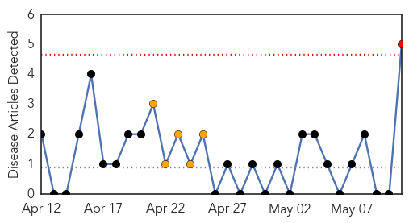
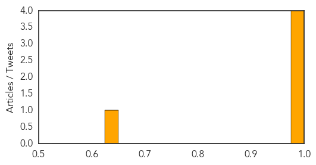

West Nile Virus
30-Day Web Trend
1 alerts, 5 warnings

30-Day Twitter Trend
0 alerts, 0 warnings

Article Locations

Article Confidences
Top Articles:
- 0.997
- West Nile, more than a river in Egypt
- 0.987
- STONE: Recent rains bring threat of mosquito-borne illnesses
- 0.985
- Biting back: Scientists aim to forecast West Nile outbreaks
- 0.977
- The High Cost Of Treating People Hospitalized With West Nile Virus
- 0.642
- Despite Spread of Lyme Disease, Massachusetts Dedicates No Money to Prevention
Top Tweets:
-
No tweets found for May 11, 2015